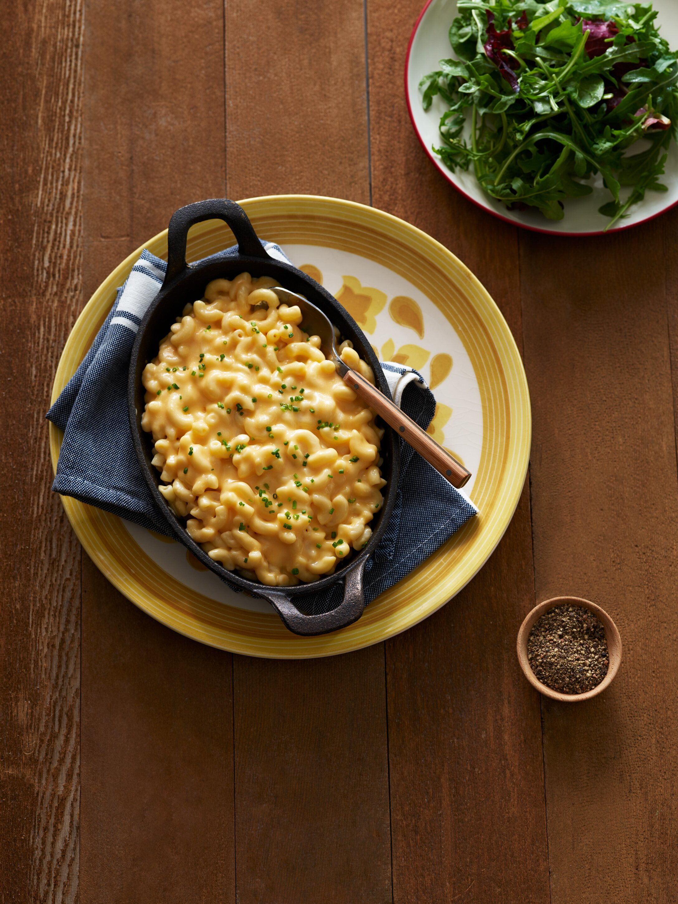

Mac N' Cheese

Our recipe for Easy Creamy Mac N' Cheese has only 5 ingredients and is on the table in less than 30 minutes
What's not to love about that?!
Whether you serve it on the side or as a main dish, it's comfort food that the whole family will love.
- 8 ounces elbow macaroni
- 1 ½ cups milk
- ¼ cup Country Crock® Spread
- 2 tablespoons flour
- 1 ½ cups shredded Cheddar cheese
- Cook pasta in large pot according to package instructions
- Meanwhile, whisk milk, Country Crock® Spread, and flour in large saucepan.
- Bring to a boil over medium-high heat, whisking frequently.
- Reduce heat and cook, stirring occasionally, until thickened, about 5 minutes.
- Stir in cheese until melted; remove from heat. Drain pasta and fold into the sauce.